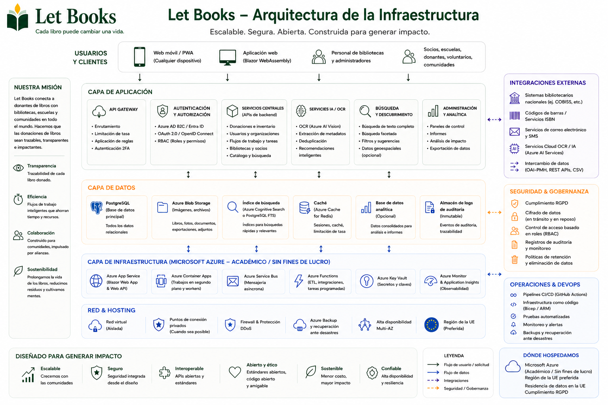

Los ejemplos de alojamiento y gobernanza describen la dirección de la arquitectura y las reglas, pero no significan implantaciones certificadas ni responsabilidades productivas existentes.
Guía para administradores
Alinea acceso, privacidad y logística desde el principio.
Let Books debe ser útil para un donante privado, una asociación o un futuro anfitrión institucional. Por eso los administradores necesitan reglas claras sobre usuarios, tenants, roles, ubicaciones y uso opcional de IA.

Qué gestionan los administradores
- Accesos aprobados y membresías
- Tenants y roles
- Estructura de ubicaciones y flujos de donación
- Límites de privacidad y auditoría
- Ajustes opcionales de IA, OCR y traducción
Qué conviene evitar
- Acceso basado solo en inicio de sesión externo
- Divulgación pública de ubicaciones exactas de almacenamiento
- IA de pago obligatoria en flujos básicos
- Mezclar el ejemplar físico con metadatos puros
Modelo de acceso
La autenticación puede venir de proveedores externos de identidad, pero la autorización debe permanecer bajo control de la aplicación.
Accesos aprobados
Las implantaciones tempranas o privadas deben limitar el acceso a usuarios aprobados previamente.
Membresías en tenants
La misma persona puede participar en varios tenants con roles distintos.
Visibilidad por rol
Los revisores no deben ver automáticamente notas privadas o detalles del hogar del donante.
Privacidad y gobernanza
Las ubicaciones exactas, las notas privadas y los datos de contacto deben mantenerse restringidos. Exportaciones, importaciones, cambios de rol y futuras solicitudes de IA deben registrarse.
Dirección de implantación
La plataforma debe funcionar para una implantación privada, pero seguir abierta a alojamiento institucional o autogestionado más adelante, con almacenamiento independiente del proveedor.
Ejemplo: Una asociación utiliza Let Books para varios donantes locales y bibliotecas asociadas. Un administrador aprueba el acceso, cada donante tiene su propio tenant y el OCR sigue desactivado hasta que exista presupuesto para ello.